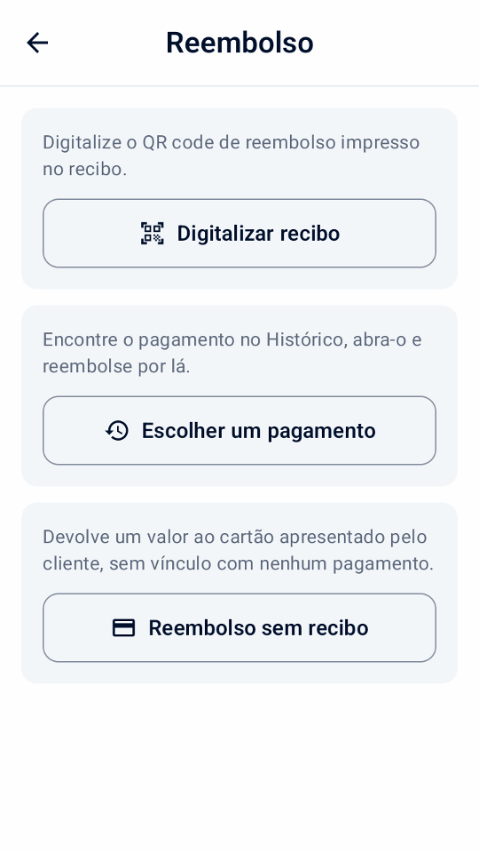
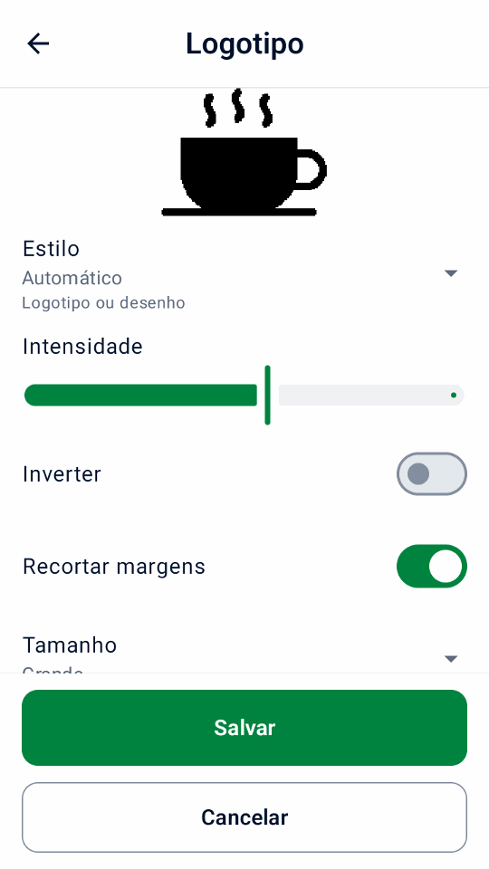
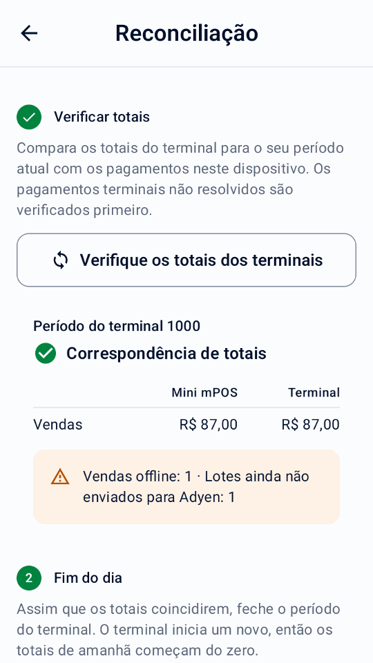

Guia
Usando Mini mPOS
Prepare seu negócio, receba pagamentos, entregue recibos e feche o dia. Adicione opções de pagamento quando precisar.
Prepare seu negócio
Preparar produtos, impostos e acesso de pessoal
Conclua a configuração da conexão antes de aceitar pagamentos reais.
Definir a moeda e o imposto
- Em Configurações › Pagamentos, escolha um Moeda que sua conta de comerciante aceita para pagamentos presenciais.
- Em Configurações › Imposto, verifique as taxas, se os preços incluem impostos ou se o imposto é adicionado na finalização da compra e a taxa padrão para novos produtos.
Após a configuração, Configurações › Pagamentos pode sugerir a moeda de liquidação principal da conta de estabelecimento informada pela Adyen. Isso não confirma que a conta aceita pagamentos nessa moeda. Ao escolhê-la, a mesma revisão de preços é aberta; manter a moeda atual não altera nada.
Todo produto tem uma alíquota de imposto; use uma taxa de 0% para itens não tributados. Desligando Cobrar imposto deixa de cobrar imposto, mas mantém as alíquotas.
Importante
A alteração da moeda mantém os números nos seus preços; não os converte a uma taxa de câmbio. Verifique os preços dos seus produtos depois.
Adicionar produtos
- Abrir Configurações › Produtos e toque em +.
- Insira um nome, preço e taxa de imposto. Opcionalmente, adicione uma categoria e um código de barras, digitado ou digitalizado.
- Para um depósito, ligue Produto de pré-autorização para que apareça apenas nas pré-autorizações.
Configurar os PINs da equipe
Em Configurações › Segurança, toque em Definir PIN para proteger Configurações e Produtos com um PIN de administrador e escolha quando o acesso volta a ser bloqueado. Toque em Definir PIN de gerente para as ações protegidas; o PIN de administrador não as aprova. Depois, use Alterar PIN de administrador ou Remover PIN de administrador.
Em Permissões do gerente, escolha quais ações exigem o PIN de gerente. Ações semelhantes compartilham um interruptor; reembolsos referenciados, sem recibo e em dinheiro têm cada um o seu. A aprovação do gerente nestes guias segue essas escolhas.
Sem PIN de administrador, todas as ações ficam liberadas. Depois que ele existe, as ações protegidas ficam bloqueadas até que um PIN de gerente seja definido. Remover o PIN de administrador também remove o PIN de gerente; as escolhas de permissões são mantidas. Vários PINs incorretos bloqueiam a digitação por um tempo.
Atenda seus clientes
Aceitar um pagamento com cartão
- Na página inicial, toque em Nova venda. Toque em produtos, toque Digitalizar código de barrasou adicione um Item personalizado.
- Toque Cobrar. Verifique os itens, impostos e total, e preencha os campos de referência ou email.
- Toque Pagar. O terminal, ou aplicativo Adyen Payments com Tap to Pay, solicita que o cliente pague.
- Aguarde o resultado. Não inicie outro pagamento até que ele apareça.
- Entregar ao cliente um recibo com Imprimir recibo, Enviar recibo por e-mail ou Compartilhar recibo, a menos que tenha sido entregue automaticamente.
Nota
Conforme o terminal e sua conta de comerciante, os clientes inserem ou aproximam um cartão, ou aproximam um celular ou relógio. Com o Tap to Pay, o app Adyen Payments orienta o cliente.
Aviso
Resultado desconhecido não significa que o pagamento falhou. Verifique o pagamento original antes de cobrar novamente.
Referências do cliente e salvamento de cartões são opcionais; veja referências e cartões salvos. Para dividir a conta ou aceitar dinheiro, cartões-presente ou vale-refeição, veja os fluxos de pagamento opcionais. Para que os clientes paguem no próprio celular, use um link de pagamento. Se um pagamento for recusado, veja pagamentos recusados.
Reembolsar ou cancelar um pagamento
- Reembolsar
- Por um pagamento cobrado. Devolve todo ou parte do dinheiro.
- Cancelar (anular)
- Para um pagamento retido que não foi capturado: toque em Cancelar pré-autorização para um depósito, ou Cancelar pagamento para uma venda Aguardando gorjeta. Isso libera a retenção.
Para reembolsar:
- Na página inicial, toque em Reembolso e depois em Digitalizar recibo para ler o QR code de reembolso do recibo, ou em Escolher um pagamento para abrir a venda original em Histórico.
- Escolha um reembolso total, um valor ou itens individuais. Os reembolsos de itens precisam da venda original neste dispositivo.
- Confirme o reembolso e insira o Gerente PIN se solicitado.


Esses reembolsos estão vinculados ao pagamento original. Reembolse links de pagamento pagos na Customer Area.
Uma venda dividida é reembolsada para seus pagamentos originais. O Mini mPOS propõe quanto devolver a cada cartão e quanto dinheiro entregar; toque em um pagamento para ajustá-lo. Os cartões são reembolsados primeiro, um de cada vez, e depois o dinheiro, que exige um PIN de gerente. Se um reembolso no cartão não for aceito, nada mais é devolvido; abra a venda para ver o que falta.
Uma venda com sobretaxa informada devolve primeiro os valores de compra, depois a gorjeta e por fim a sobretaxa; um reembolso total inclui a sobretaxa restante.
Reembolso sem recibo
Use Reembolso sem recibo somente quando não houver pagamento para reembolsar, como uma devolução sem recibo. Ele devolve um valor ao cartão apresentado pelo comprador e não está vinculado a nenhum pagamento, então o Mini mPOS não pode verificar o que foi pago. Você é responsável por reembolsos errados ou repetidos.
Peça à Adyen para habilitar reembolsos não referenciados para a loja e defina o limite de reembolso da Adyen no Customer Area. Depois, em Configurações › Pagamentos, ative Permitir reembolsos sem recibo, defina seu próprio Limite de reembolso e um PIN de gerente. A Adyen não permite esses reembolsos em alguns países nem para carteiras com QR code; o Mini mPOS verifica a loja que a Adyen confirmou para o terminal.
Toque em Reembolso sem recibo, digite o valor, escolha um motivo, confirme e aprove com o PIN de gerente; em seguida, o comprador apresenta o cartão. Reembolso aprovado significa que o adquirente aprovou na hora; Reembolso solicitado significa que a Adyen recebeu a solicitação. O histórico, os recibos e o relatório diário mostram esses reembolsos separadamente; concilie-os manualmente.
Se o suporte da Adyen configurou um atraso de reembolso, ative Atraso de reembolso configurado. Enquanto durar o atraso, abra o reembolso e toque em Cancelar reembolso; depois verifique no Customer Area se ele foi interrompido.
Adyen: Unreferenced refunds · Adyen: Cancel an unreferenced refund
Importante
Reembolso solicitado significa que a Adyen recebeu a solicitação, e não que o cliente tenha o dinheiro. Confira o resultado final na Customer Area. Se o resultado de um reembolso for desconhecido, verifique antes de tentar novamente.
Imprimir, enviar por e-mail ou compartilhar recibos
A partir de um resultado de pagamento ou entrada do Histórico, toque em Imprimir recibo ou Enviar recibo por e-mail. Tablets e telefones também oferecem Compartilhar recibo, que envia uma imagem através do menu de compartilhamento do Android. A impressão precisa de um terminal com impressora.
Personalizar e testar recibos
- Em Configurações › Recibos, insira os dados da sua empresa, cabeçalho e rodapé. Ou toque em Importar detalhes comerciais da Adyen para revisar os dados da Adyen. Escolha Preencher dados ausentes para manter o texto existente ou Substituir dados existentes para usar o nome, endereço e telefone fornecidos. Campos importados em branco, identificação fiscal, título e rodapé permanecem inalterados.
- Escolher Imprimir automaticamente, quando imprimir um Via do estabelecimento e se deve Mostrar código de reembolso QR.
- Toque Imprimir recibo de teste e verifique a impressão. A visualização na tela não mostra o layout exato da impressora.
Outras opções:
- Mostrar valores de impostos
- Mostra o imposto incluído ou adicionado ao total. Não altera o imposto cobrado.
- Mostrar discriminação fiscal
- Lista o imposto para cada taxa. Necessário mostrar o imposto incluído quando os preços incluem impostos.
- Mostrar totais tributáveis por taxa
- Agrupa os totais dos itens por alíquota de imposto, incluindo 0%.
- Mostrar referências
- Ligado por padrão. Imprime a referência do comerciante e qualquer referência do cliente, para que um recibo possa ser correspondido ao seu pagamento.
- Taxa de imposto marcada (%)
- Marca itens nessa taxa com um Marcador de item e sua explicação. Deixe em branco para não haver marcador.
- Caracteres por linha
- 32 por padrão, para rolos de recibos estreitos. Escolha a largura da sua impressora com um teste de impressão.
Em Configurações › Recibos › Logotipo, escolha uma imagem PNG, JPEG ou WebP. Se o dispositivo não tiver seletor de arquivos, envie uma pelo auxiliar de configuração, sozinha ou com outras configurações. Confira a prévia em preto e branco: Estilo escolhe Automático, Logotipo ou Foto, e Escuridão, Inverter e Recortar margens fazem o ajuste fino. Escolha um Tamanho grande ou pequeno e salve. Desative Imprimir nome do estabelecimento se o logotipo já o incluir.
O logotipo aparece nos recibos impressos, enviados por e-mail e compartilhados, inclusive reimpressões. Para ajustá-lo, escolha de novo a imagem original; use Remover logotipo para apagá-lo.


Definir o idioma
O app está disponível em inglês, chinês simplificado, chinês tradicional, japonês, português do Brasil, espanhol e francês. Configurações › Idioma muda na hora o texto do app e os rótulos dos recibos neste dispositivo; o texto salvo do estabelecimento e os nomes de produtos não mudam. Seguir dispositivo usa o idioma do Android para o app. As linhas de cartão da Adyen seguem o idioma de recibos do terminal.
Configurar recibos de e-mail
Acesso de saída para seu servidor SMTP, geralmente TCP 587 (STARTTLS) ou 465 (SSL/TLS).
- Abrir Configurações › Recibos por e-mail. Escolha seu provedor ou insira o servidor SMTP, porta, remetente e login. Use STARTTLS ou SSL/TLS.
- Envie um e-mail de teste.
- Na mesma tela, escolha quando solicitar o e-mail do cliente e se deseja enviar os recibos automaticamente.
Siga as instruções do seu provedor para permitir SMTP e obter a senha correta:
Se os recibos não forem impressos ou enviados, consulte problemas de impressora e e-mail.
Feche o dia
Encontre pagamentos e feche o dia
Histórico lista pagamentos e reembolsos por dia, com totais diários.
Cada página mostra até 100 entradas de sete dias; use Anterior e Próximo para navegar. A busca abrange todas as transações mantidas.
- Filtrar por vendas, Aguardando gorjeta, pré-autorizações, reembolsos ou Precisa de atençãoe usar Forma de pagamento para uma marca de cartão ou carteira.
- Pesquisa por referência, código de autorização, referência de cliente ou email, últimos quatro dígitos
do cartão, marca, carteira ou valor exato. Cada palavra deve corresponder:
visa 34encontra pagamentos Visa de 34.
Os totais na tela seguem sua pesquisa e filtros. Os pagamentos retidos, como depósitos e gorjetas no recibo, contam como vendas no dia em que sua captura é aceita.
Fechar o dia
- Abrir Histórico, filtrar por Precisa de atenção e resolver cada entrada; veja resultados desconhecidos.
- Verifique o Aguardando gorjeta e filtros de pré-autorização. Insira gorjetas e capture ou cancele depósitos antes que seus depósitos expirem.
- Toque no ícone de impressão ao lado do dia para imprimir o Resumo diário local.
- Reconciliar com os relatórios da Adyen na Customer Area; veja o Guia de reconciliação de liquidação da Adyen.
O resumo cobre o dia inteiro, ignorando os filtros: vendas, gorjetas incluídas, reembolsos aceitos, líquidos, novas retenções e operações não resolvidas, para cada moeda. TEST e a atividade do simulador são rotuladas. Links de pagamento pagos e capturas sem data conhecida são listados separadamente como atividades sem data.
Importante
O resumo diário local cobre apenas pagamentos mantidos neste dispositivo. Não é liquidação da Adyen e não inclui outros dispositivos. O Customer Area é oficial.
Aviso
Alternar entre LIVE, TEST e o simulador exclui permanentemente todo o histórico de pagamentos e dados de relatório neste dispositivo. Se existirem pagamentos inacabados, o aplicativo avisa novamente: nada é cancelado na Adyen, mas a recuperação local e os dados de novas tentativas seguras são perdidos. Os produtos e as configurações permanecem.
Compare com os totais do terminal e feche um período
- Na página inicial, toque em Reconciliação, então Verifique os totais dos terminais. Mini mPOS primeiro verifica pagamentos de terminais pendentes ou desconhecidos e, em seguida, mostra Mini mPOS e vendas de terminais e reembolsos lado a lado.
- Se Os totais diferem, resolva os pagamentos que necessitam de atenção no Histórico e verifique novamente. O período terminal não é necessariamente um dia corrido; outros dispositivos que usam o terminal ou falta de histórico local podem causar diferenças. Links de pagamento, cobranças de tokens e histórico de amostras não são pagamentos terminais.
- No final do dia, toque em Encerrar período do terminal, confirme e conclua a aprovação do Gerente, se solicitado. O terminal encerra seu período e inicia um novo; isso não pode ser desfeito.
- Opcionalmente, toque em Imprimir o relatório de hoje para o Resumo diário local.
Não disponível com Tap to Pay. Uma comparação que confere ou um período fechado não confirmam a liquidação, a conclusão de reembolsos nem o envio off-line; o Customer Area continua sendo a referência.


Gerencie dispositivos e dados
Configure mais dispositivos e gerencie dados
- No dispositivo configurado, abra Configurações › Dados e transferência › Compartilhar com outro dispositivo. Escolha o catálogo, configurações e/ou senhas e chaves e toque em Mostrar códigos QR.
- No novo dispositivo, escolha Configurar a partir de outro dispositivo e escaneie todos os códigos, em qualquer ordem. Escolha se deseja mesclar ou substituir seu catálogo.
- Insira o código de transferência de 12 caracteres mostrado no primeiro dispositivo, mesmo ao copiar apenas produtos ou configurações. Mantenha-o separado dos códigos QR. Toque Importar.
- Verifique preços e impostos, teste a conexão em Configurações › Terminale imprima um recibo de teste.
O novo dispositivo mantém destino de pagamento, terminal, ambiente e registro Tap to Pay próprios. Uma chave compartilhada funciona para outro terminal somente se a Adyen atribuir a mesma chave a ele.
Importante
Esta é uma cópia única, não uma sincronização ou um backup do histórico de pagamentos. Cada dispositivo mantém seus próprios pagamentos. Limpar os dados do aplicativo em Android exclui todos os produtos, configurações e histórico do dispositivo.
Em Configurações › Dados e transferência, conjunto Manter transações para ou toque em Limpar histórico liquidado; pagamentos não resolvidos são sempre mantidos.
Em um tablet ou telefone, Mini mPOS verifica uma versão mais recente na inicialização. Se a casa oferece Atualizar, toque nele para abrir o APK em seu navegador e instale o download. Os terminais Adyen são atualizados por meio do Customer Area, não deste prompt. Você também pode obter o último lançamento e siga o etapas de instalação. Mantenha a mesma fonte de assinatura e instale sobre o aplicativo existente; não desinstale ou limpe seus dados.
Para problemas de importação, consulte PIN e problemas de transferência .
Opções de pagamento
- Verificar e configurar capacidades da Adyen
- Use fluxos de trabalho de checkout opcionais
- Reconhecer pagamentos offline e lotes pendentes
- Digitalizar o código da carteira do comprador
- Cartões salvos (Tokens)
- Vender e gerenciar cartões-presente
- Receba o pagamento com um link
- Manter e receber um depósito
- Coletar uma gorjeta no terminal
- Colete uma gorjeta escrita no recibo